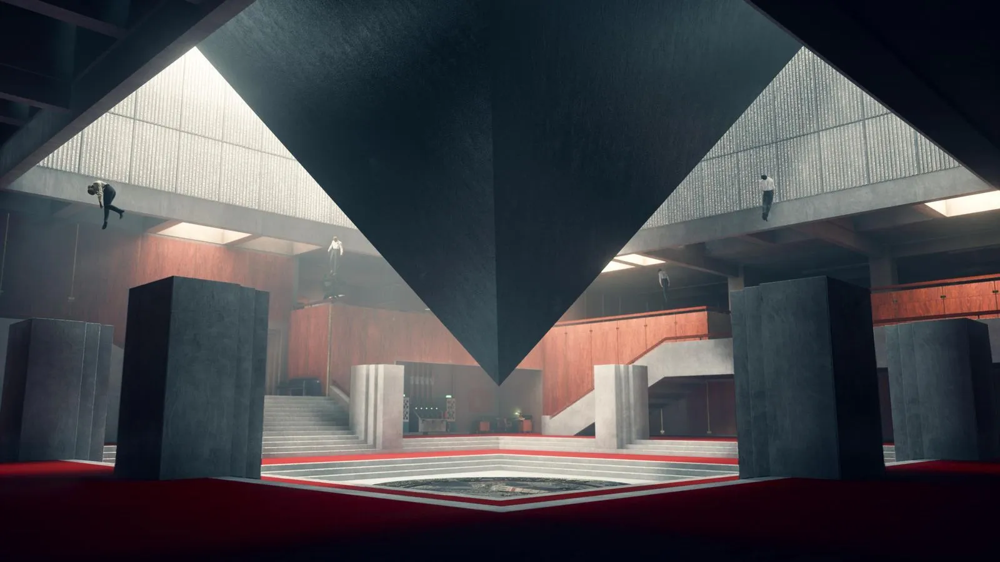
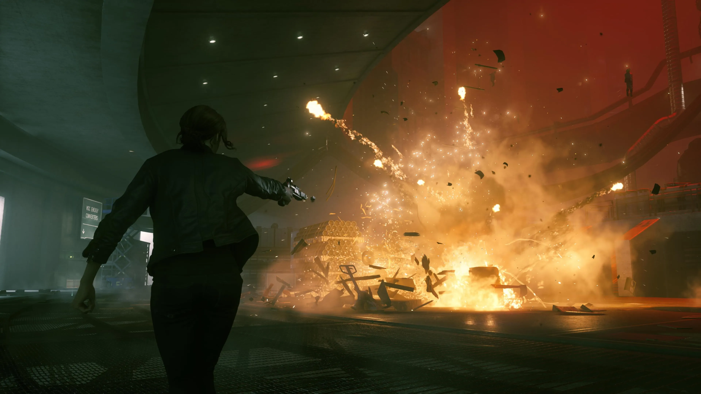

CONTROL.
RUANG YANG BERCERITA.
CONTROL adalah game aksi-petualangan dari Remedy Entertainment yang memadukan kemampuan supernatural dengan dunia yang penuh misteri. Di halaman ini, saya melihatnya sebagai bahan untuk mengamati bahasa visual dalam game.


ARSITEKTUR & KOMPOSISI
Ruangan besar, bentuk geometris, dan garis-garis tegas menciptakan kesan megah sekaligus asing. Posisi objek di dalam layar membantu mengarahkan perhatian.
CAHAYA & EFEK VISUAL
Perbedaan area terang dan gelap dapat mengubah suasana sebuah adegan. Efek visual memberi penekanan pada aksi dan membantu membangun kesan supernatural.
HUBUNGANNYA DENGAN EDITING
Hal yang sama juga bisa dipelajari dalam video editing: memilih sudut pandang, menjaga ritme, serta menggabungkan gambar dan suara agar sebuah adegan terasa utuh.
Tentang penulis catatan ini ↗ Baca tentang CONTROL di situs Remedy ↗